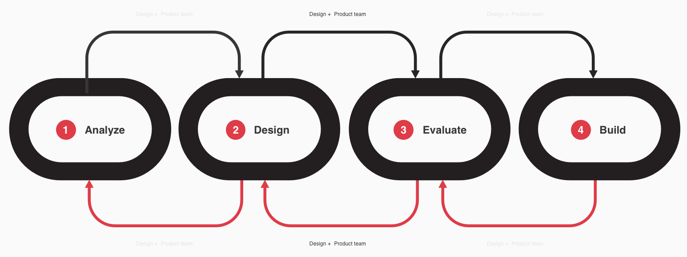
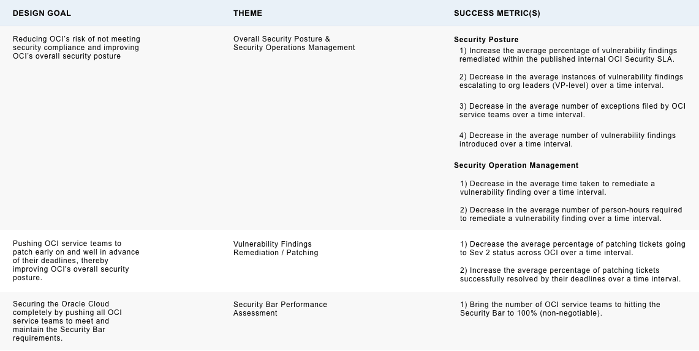
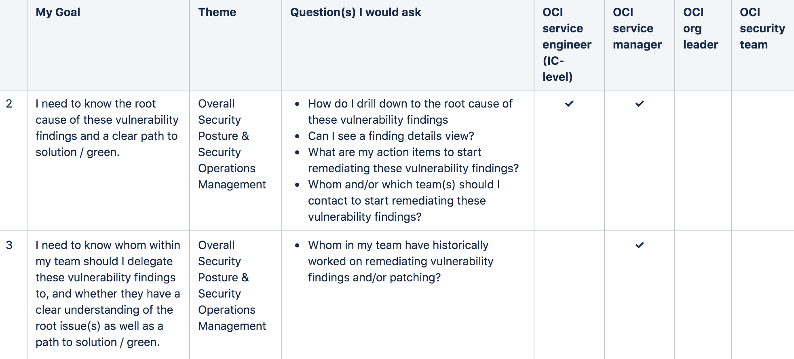
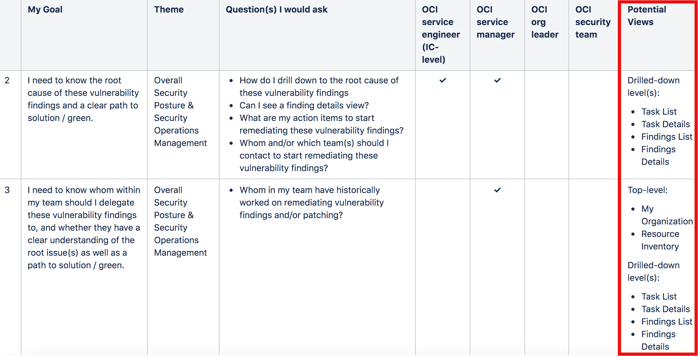
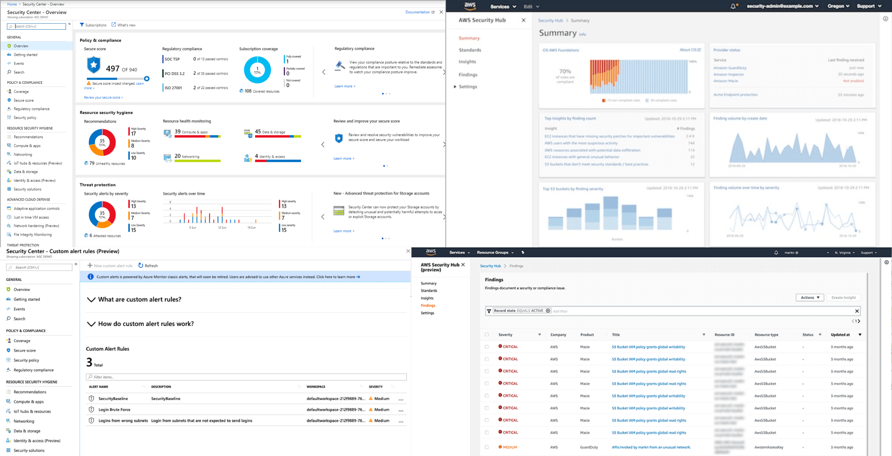
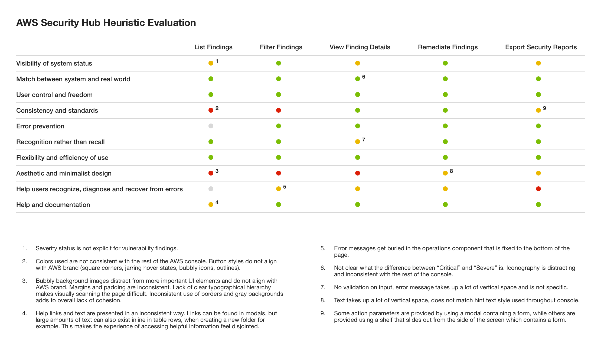
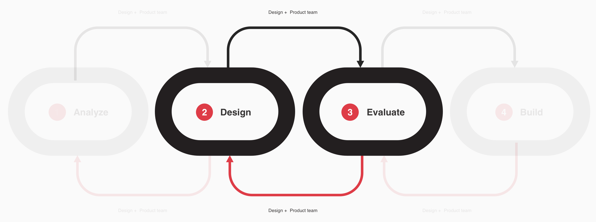
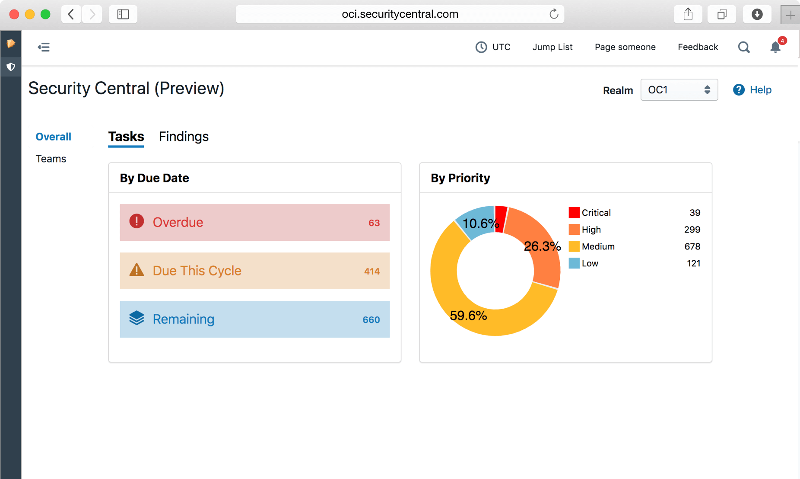
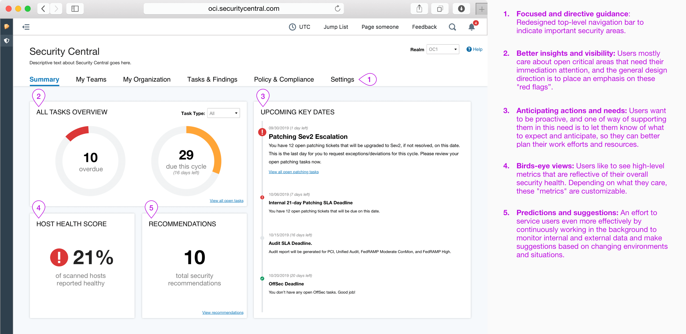

Larry Ellison speaking about the company's critical focus on Security (as part of its strategic investment into the cloud) at Oracle OpenWorld 2019 - Oracle's annual tech conference
Security means business
Keeping Oracle Cloud Infrastructure (OCI) secure is a task of paramount importance that holds a central role in OCI's cloud and customer experience strategy. Ever since the conception of OCI, Larry Ellison has repeatedly pointed to Security as one of its top areas of focus. In fact, OCI's homegrown second-generation cloud infrastructure was built on top of a "fundamental re-architecture of the conventional public cloud, because “the current state of the art of cloud defenses is just not good enough, not even close,”" Oracle Executive Chairman and CTO Larry Ellison said during his keynote at the 2018 Oracle OpenWorld.
As such, how well can OCI secure its cloud is a factor that possesses a direct business impact on how likely it is for the company to win its cloud market share.
Working backwards
As an organization, possessing a robust security posture would provide OCI with the foundation that enables customers to trust it with their most valuable workloads. In this respect, the company's ability to provide leading security requires that it strives to address the following business goals:
- Regulatory Adherence & Accreditation - Keep Oracle Cloud out of legal complications and win more business.
- OCI Security Bar - Do the things necessary to secure our cloud.
- Rapid Security Response - Fix all the bad things we find as efficiently as possible.
- Scalable Security Operations - Keep up with 1, 2, and 3 as Oracle Cloud continues grow.
This all starts with knowing what the company must protect. OCI cannot secure what it doesn't know exist. In fact, the top threat to the security of Oracle Cloud is a lack of an authoritative asset inventory and security reporting/assessment mechanism.
Introduction to Security Central
Inventory management is at the core of OCI's security solution. The company needs an application that can help it capture rapidly changing asset information, and serve as the source of truth for all physical and virtual assets in OCI's data centers. At the same time, this application should also be a security reporting / assessment service that could provide a centralized view of the security status for all tracked assets. Ideally, it would enable OCI service owners, leadership, as well as Security and Compliance teams to understand the company's current security posture. It would automate security reporting for use in compliance audits, and notify asset owners when remediation is required. While Spotlight - OCI's legacy tool for inventory management - served as an effective inventory manager, it didn't quite do a good job at visualizing the desired centralized view of the organization's security posture.
As such, Security Central has been introduced to become OCI's go-to security management service with the ultimate goal of becoming a "single-pane" interface for OCI service teams, leadership, and Security / Compliance teams to assess and understand OCI's assets' security / compliance status. In a nutshell, OCI service teams should be efficiently notified of security findings and accordingly provided with a clear path to remediation; leadership can quickly understand the security status of assets owned by their teams and services, aggregated at any level; and Security / Compliance relies on Security Central's daily findings reports to understand the risk to our compliance posture, giving them the ability to effectively generate reports for our auditors.
In order to help bring these ideals to life, the Security Central UI/UX requires enhancements that span across various themes / areas, and a truly collaborative effort that leverages and iterative design process:
Problem Statements & User Personas
Below is a general outline of the different themes that are relevant and all play a role in determining how good OCI's security posture could be. Through an affinity diagramming exercise, these themes have been defined based on the user data collected from user requirements meetings and user interviews. Each one of these themes present certain challenges and user pain points - those of which will benefit from UI/UX enhancements as well as feature additions to the tool.
- Overall Security Posture & Security Operations Management
- Vulnerability Findings Remediation / Patching Completeness
- Security Bar Performance Assessment
Overall Security Posture & Security Operations Management
- It is difficult for OCI service teams and their leaders today to quickly and seamlessly gain a data-driven / high-level insight into their team's / org's security posture, thereby enhancing the challenge of allocating resources effectively to areas that need overall security support.
- Likewise, the OCI Security team lacks a truly data-driven, seamless, and automated mechanism that will allow them to generate meaningful insights and metrics around their partner OCI service teams' security postures, thereby enhancing the challenge of efficiently supporting these teams in remediating their vulnerability findings. The existing support mechanism is very manual and heavily reliant on JIRA.
- It is also difficult for OCI service teams to grasp a high-level view of their asset inventory, and pinpoint areas / resources that are posing security issues. Again, this enhances the challenge of allocating resources effectively to areas that need overall security support.
Vulnerability Findings Remediation / Patching Completeness
- OCI service teams are not proactively patching their resources early enough in the patching cycle. They are mostly acting reactively to their patching tickets escalating to Sev2 status, or worse, violating the published internal Patching SLA. The average percentage of patching tickets escalating to Sev2 status and risking violation of the published internal Patching SLA is high at over .... This maintains the risk of OCI not meeting security compliance at a worryingly level, potentially placing a big business impact on the company.
Security Bar Performance Assessment
- It is difficult for OCI service teams and general OCI senior leadership to assess how well their org / team is doing in meeting the OCI Security Bar requirements, thereby enhancing the challenge of allocating resources effectively to areas that need overall security support. Security Bar is an interesting theme, because in a way it's a program that has been designed to cover aspects of both the two themes described above (i.e. patching completeness rate over a specific time interval is part of the Security Bar). However, it is necessary to give Security Bar its own theme as a way of emphasizing its significance - having been been repeatedly mentioned by users throughout our user interviews and requirements gathering sessions.
User Personas
Thinking through these themes and problems also lead to the identification of these primary user personas:
- OCI Service Engineer
- OCI Service Manager
- OCI Senior Leadership (VP-level)
- OCI Security Team(s)
Design Goals
To help better direct and keep the UX direction focused, a set of design goals and corresponding success metric(s) have been crafted for each defined theme:
User Goals & Questions
One finding gathered from the user research process is that while all users possess the same big two mental model questions, to various degrees, they may come to Security Central with differing goals, needs, and more granular questions in mind.
Two Big Mental Model Questions
- Is OCI secure?
- Is OCI security-compliant?
Granular Resource-Level User Questions
Below the top-level user questions above are more drilled down, granular questions users would ask as they advance through their workflows. Different questions asked by different groups of users, and it's important to precisely identify these connections (i.e. which user would ask what question, and why?) in order to better assess where the design priorities should be. These questions are all directed and lead by a specific goal users strive to achieve by executing these workflows. A big table is created to consolidate all of this data. Below is one sliced portion of it:
Early Design
Conducting user research is extremely critical in opening more doors to better understanding user contexts. Equipped with this knowledge gain, early design sketches are accordingly produced to visualize plausible user journeys / workflows and how different stages throughout these flows may be mapped to the defined user goals and questions.
User journey mapping as an exercise creates opportunities for the design and product team to expand further on the user worflows and envision how different interfaces / views could be designed to support these workflows. The User Goals & Questions table is revisited frequently during this stage to ensure that user needs are always taken into account, and as the creative process begins with more interfaces coming into the picture, an extra column is added to the table to delienate how specific views could be leveraged to support specific user goals / needs.
Competitive Analysis
Part of understanding users and their context is understanding the ecosystem within which they operate, and part of understanding this ecosystem requires an analysis of various different competing providers of the same product / service in the market. Competitive analysis is therefore a crucial aspect of the process. Not only does serve as a source for creative inspiration, it also helps surface better understandings around what works and what doesn't, thereby revealing opportunities where unarticulated user needs may be addressed.
Heuristic evaluation is a common exercise that often accompanies these competitive analyses.
User Testing
To avoid designing in a vacuum and ensure that a highly collaborative process is followed, coordination and support across all relevant products / functional areas - as well as other relevant stakeholders - are involved. Amongst different stakeholder groups, users play the most critical role. They too are involved in the design process in the form of user testing.
In this respect, the design and build team behind Security Central holds a four-hours user testing session every sprint (two weeks; bi-weekly cadence). For each session, typically two design questions / areas with clearly defined test goals are picked for testing, and four user participants are selected to test each item. Each test is conducted and timed within a twenty minutes box, and users are asked to finish a given task using the provided UI during this time box. Depending on the participants' time and physical availabilities, either an in-person or remote test is held. Throughout the tests, participants are encouraged to speak aloud their thoughts, experiences, questions, and/or pain points, and all of their quotes are carefully noted down. Specific workflow metrics (i.e. time taken to complete tasks, task completiton rate) are also identified and tracked throughout the tests. All of these data are accordingly collected and further consolidated by the design and product team immediately following the test sessions.
High-Fidelity Design
Below is a few selected hi-fidelity wireframes produced for various purposes, including leadership demos, usability testing, and dev collaboration. These are created using the existing UI components library utilized by the UI dev team, with close attention paid to maintaining visual consistency across the OCI services portfolio.
Summary Dashboard - Before
Summary Dashboard - After
As labeled above, here're examples of important design decisions / directions made for the Summary Dashboard view:
1. Focused and directive guidance - Redesigned top-level navigation bar to indicate important security areas.
2. Better insights and visibility - Users mostly care about open critical areas that need their immediation attention, and the general design direction is to place an emphasis on these "red flags".
3. Anticipating actions & needs - Users want to be proactive, and one of way of supporting them in this need is to let them know of what to expect and anticipate, so they can better plan their work efforts and resources.
4. Birds-eye views - Users like to see high-level metrics that are reflective of their overall security health. Depending on what they care, these "metrics" are customizable.
5. Predictions & suggestions - An effort to service users even more effectively by continuously working in the background to monitor internal and external data and make suggestions based on changing environments and situations.